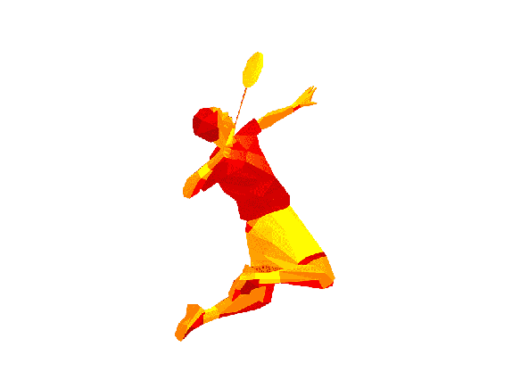

wiku
bultang
WIBU atau Wikusama Bulutangkis adalah ekstrakurikuler bulutangkis di SMK Telkom Malang dengan tujuan mengembangkan bakat dan minat siswa serta membentuk karakter yang kuat. WIBU memiliki pelatih berpengalaman dan fasilitas olahraga yang memadai. Kegiatannya meliputi latihan rutin, persiapan turnamen, dan kegiatan sosial.
View All Products
